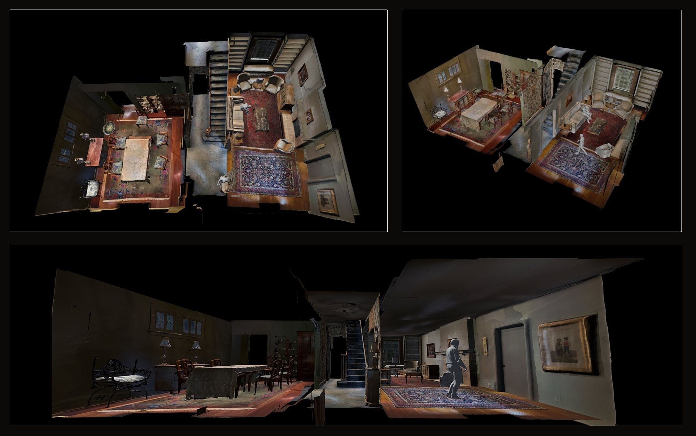
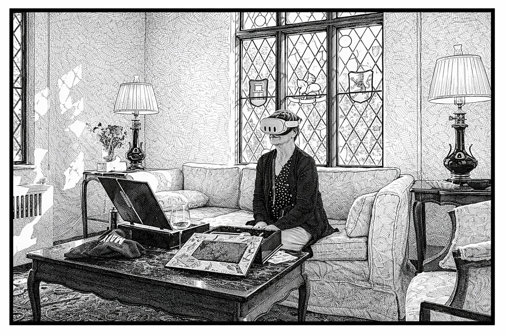
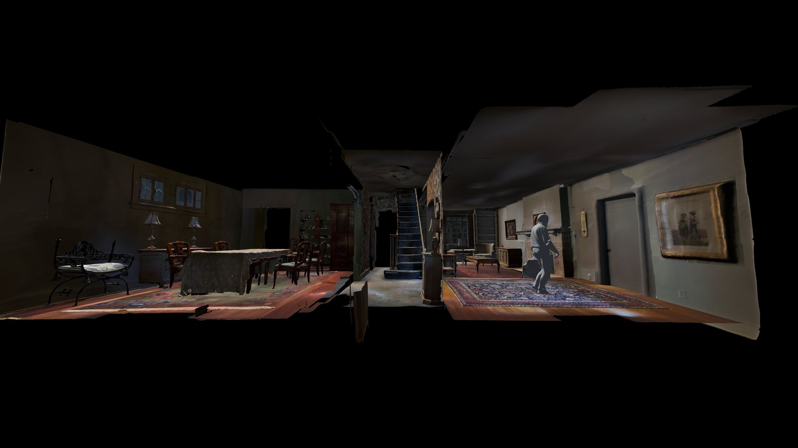
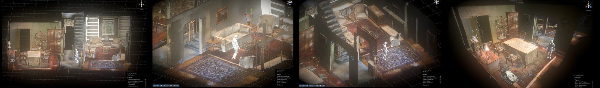
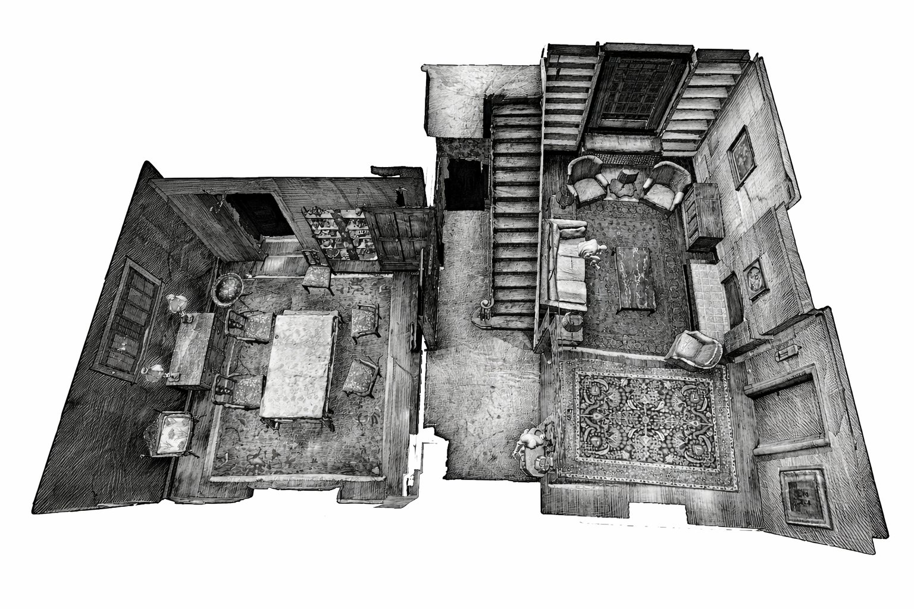

Robot maps have become very good at telling you where the chair is. They cannot tell you whose chair it was. We rebuild one family home in high fidelity, ask the people who lived there to walk through it and narrate what they remember, and then put motion-captured avatars of those same people back inside, so that a humanoid can learn to move through a home the way its residents remember it.
The gap
Where is the chair? Whose chair was it?
Metric-semantic SLAM, scene graphs and open-vocabulary maps answer geometric questions well. They encode what an object is, and rarely what it means. None of them can say "this is Grandma's chair, it's fragile, we don't use it anymore."
In a real home, where things sit and how people move comes from decades of habit and episodic memory. A robot that only sees the present room cannot predict where a resident will reach, or which of two identical vases needs care.

Approach
Reconstruct, annotate, replay
Stage 01
The house
One single-family home in Pittsburgh, PA, lived in by the same family and documented from 1965 to 2025.
- 18
- rooms across four floors
- 800+
- individually scanned objects
- 40+ hrs
- 8mm and 16mm home film
- 5,886
- archival photos at 600 dpi
- Rooms. Photogrammetry plus 3D Gaussian splatting, with panoramas for tricky surfaces.
- Objects. Structured-light scans. Each object is an addressable node in its original spot, so memories can attach at the object level.
- Film. Registered to rooms and time periods, and used to cue memories.
Stage 02
Residents annotate with memory
Eighteen former occupants, ages 50 to 95, each with 30 to 50 years in the home, walk through the reconstruction in sessions of 12 to 28 minutes.

Captured in each session
- Egocentric video, 6-DOF head pose and eye tracking from a head-mounted display
- Continuous narration, transcribed and aligned to the reconstruction
- Tangible "memory boxes" holding original wallpaper, carpet, scents and heirlooms, instrumented for touch and grip
Every spoken memory is linked to the object or region the person was attending to.
From narration to node attributes
Each object or region can carry information no sensor in the room could capture. Pick an attribute:
Illustrative node, not a record from the dataset.
Stage 03
Agent replay in simulation
Eighteen sessions, each under half an hour, is sparse. To turn them into scalable, human-grounded navigation data, each participant is 3D scanned and rigged to a parametric body model (SMPL). Their recorded head pose, gaze and contact events are retargeted onto their own avatar, which re-executes their remembered paths inside the reconstruction.


Unlike random or generated trajectories, this motion keeps the subtleties of real lived experience, because it came from a person moving through a place they remember.
Preliminary findings
Three early observations
Analysis is ongoing.
- 01
Memory draws attention
Gaze and movement concentrate where people recall memories: the dining table for holidays, the stairs for basement stories.
- 02
Movement precedes visibility
People orient toward remembered object locations before seeing them, even objects that exist only virtually.
- 03
Touch and smell matter
Participants who handled scent and textile artifacts focused longer in the virtual room.
Why it matters
What this means for home robots

Meaning-based manipulation
Identical geometry and class can still call for different grasps. Today's maps have no channel for that.
Where residents believe things are
Habitual-use labels model expected locations, which is key for assistive robots in older adults' homes.
History-referential language
Requests like "bring me Dad's old mug" are grounded using provenance and period, not appearance.
A home robot needs to know not only what is where, but what it means, and to whom.
Some of those semantics can't be observed from the home itself. They must come from the people who lived there.
Cite
@misc{humanoidsathome,
title = {Humanoids at Home: Autobiographical Semantic Maps for
Humanoid Motion from Memory in a Reconstructed
Domestic Environment},
author = {Your Name and Collaborator Name},
year = {2026},
note = {Work in progress}
}